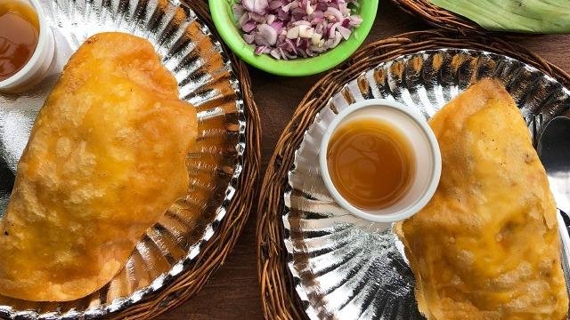
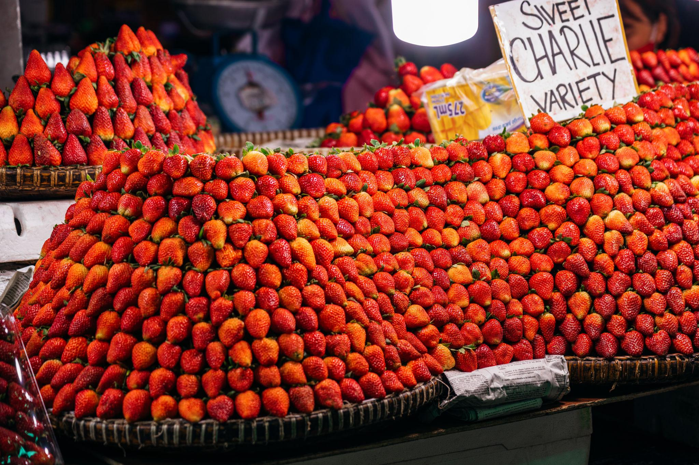
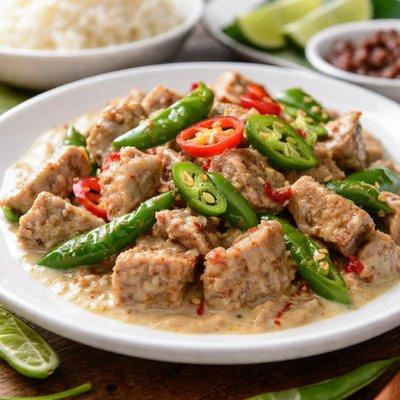

Famous For



Luzon is famous for its natural resources, local products, delicious food, and cultural heritage.
What Luzon is famous for:
- Baguio Strawberries - Baguio is known for its strawberry farms and strawberry products.
- Ilocos Empanada - A popular local delicacy filled with vegetables, egg, and meat.
- Bicol Express - A spicy Filipino dish made with pork, coconut milk, and chili peppers.
- Banaue Rice Terraces - A remarkable example of traditional Ifugao agricultural engineering.
- Manila's Historical Landmarks - Known for places like Intramuros and Rizal Park.